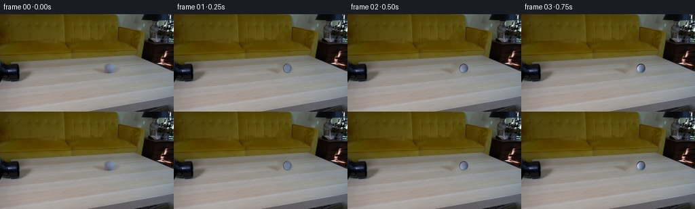
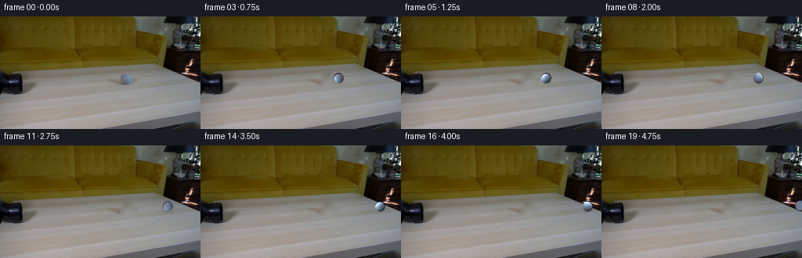
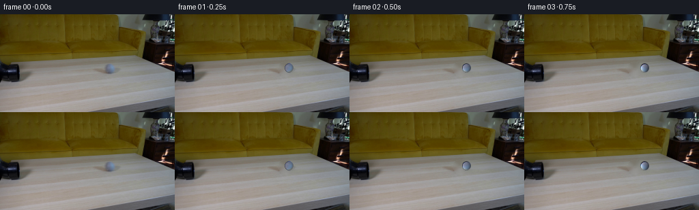

CODING AGENTS AS PIXEL WORLD MODELS
traex/DeepSeek-V4.1-Flash · 0022
点击播放 · 原生 RGB 像素
逐轮保存的候选
回放视频、检查图与代码变化。
每份候选均可单独播放。实际图片检查记录在下方工具轨迹中。
候选 01播放与检查图
点击播放 · 原生 RGB 像素

展开代码变化
--- 上一保存版本
+++ 本次保存版本
@@ -0,0 +1,176 @@
+from pathlib import Path
+
+import cv2
+import numpy as np
+from PIL import Image
+
+import artifact_io
+
+
+WIDTH = 256
+HEIGHT = 144
+FRAME_COUNT = 20
+
+# The ball in the supplied frame is the compact blue-grey sphere on the table.
+BALL_X0 = 162.0
+BALL_Y0 = 79.5
+BALL_RX = 7.0
+BALL_RY = 7.35
+
+
+def _smoothstep(edge0, edge1, value):
+ t = np.clip((value - edge0) / (edge1 - edge0), 0.0, 1.0)
+ return t * t * (3.0 - 2.0 * t)
+
+
+def _ellipse_alpha(shape, center, radii, feather=1.0):
+ yy, xx = np.mgrid[: shape[0], : shape[1]]
+ distance = np.sqrt(
+ ((xx - center[0]) / radii[0]) ** 2
+ + ((yy - center[1]) / radii[1]) ** 2
+ )
+ return 1.0 - _smoothstep(1.0 - feather / min(radii), 1.0, distance)
+
+
+def _make_clean_plate(source):
+ mask = np.zeros((HEIGHT, WIDTH), dtype=np.uint8)
+ cv2.ellipse(
+ mask,
+ (round(BALL_X0), round(BALL_Y0 + 0.5)),
+ (11, 11),
+ 0,
+ 0,
+ 360,
+ 255,
+ -1,
+ )
+ return cv2.inpaint(source, mask, 5, cv2.INPAINT_TELEA)
+
+
+def _make_ball_texture(source, clean):
+ margin = 12
+ cx, cy = round(BALL_X0), round(BALL_Y0)
+ x0, x1 = cx - margin, cx + margin + 1
+ y0, y1 = cy - margin, cy + margin + 1
+ patch = source[y0:y1, x0:x1].astype(np.float32)
+ background = clean[y0:y1, x0:x1].astype(np.float32)
+
+ yy, xx = np.mgrid[: patch.shape[0], : patch.shape[1]]
+ local_cx = BALL_X0 - x0
+ local_cy = BALL_Y0 - y0
+ nx = (xx - local_cx) / BALL_RX
+ ny = (yy - local_cy) / BALL_RY
+ radial = nx * nx + ny * ny
+ alpha = _ellipse_alpha(
+ patch.shape[:2],
+ (local_cx, local_cy),
+ (BALL_RX, BALL_RY),
+ feather=1.35,
+ )
+
+ # Remove the table from partially transparent boundary pixels.
+ safe_alpha = np.maximum(alpha, 0.08)[:, :, None]
+ foreground = (patch - (1.0 - alpha[:, :, None]) * background) / safe_alpha
+ foreground = np.clip(foreground, 0.0, 255.0)
+
+ nz = np.sqrt(np.clip(1.0 - radial, 0.0, 1.0))
+ light = np.array([-0.42, -0.52, 0.74], dtype=np.float32)
+ light /= np.linalg.norm(light)
+ lambert = np.clip(
+ nx * light[0] + ny * light[1] + nz * light[2],
+ 0.0,
+ 1.0,
+ )
+ shade = 0.43 + 0.57 * lambert
+
+ albedo = foreground / shade[:, :, None]
+ albedo = np.clip(albedo, 0.0, 255.0)
+ return albedo.astype(np.float32), shade.astype(np.float32), alpha.astype(np.float32)
+
+
+def _rotate_texture(texture, angle_degrees):
+ center = (texture.shape[1] / 2.0 - 0.5, texture.shape[0] / 2.0 - 0.5)
+ matrix = cv2.getRotationMatrix2D(center, angle_degrees, 1.0)
+ rotated = cv2.warpAffine(
+ texture,
+ matrix,
+ (texture.shape[1], texture.shape[0]),
+ flags=cv2.INTER_LINEAR,
+ borderMode=cv2.BORDER_REFLECT_101,
+ )
+ return rotated
+
+
+def _add_contact_shadow(frame, center, radius_x, radius_y):
+ yy, xx = np.mgrid[:HEIGHT, :WIDTH]
+ sx = radius_x * 0.82
+ sy = max(1.0, radius_y * 0.30)
+ shadow = np.exp(
+ -0.5
+ * (
+ ((xx - (center[0] + 1.1)) / sx) ** 2
+ + ((yy - (center[1] + radius_y * 0.76)) / sy) ** 2
+ )
+ )
+ shadow *= 0.24
+ tint = np.array([0.72, 0.76, 0.83], dtype=np.float32)
+ darkened = frame.astype(np.float32) * tint
+ frame[:] = (
+ frame.astype(np.float32) * (1.0 - shadow[:, :, None])
+ + darkened * shadow[:, :, None]
+ ).clip(0, 255).astype(np.uint8)
+
+
+def _composite_ball(frame, texture, shade, alpha, center, angle):
+ margin = texture.shape[0] // 2
+ cx, cy = center
+ ix, iy = round(cx), round(cy)
+ x0, x1 = ix - margin, ix + margin + 1
+ y0, y1 = iy - margin, iy + margin + 1
+
+ dst_x0, dst_x1 = max(0, x0), min(WIDTH, x1)
+ dst_y0, dst_y1 = max(0, y0), min(HEIGHT, y1)
+ if dst_x0 >= dst_x1 or dst_y0 >= dst_y1:
+ return
+
+ sx0, sx1 = dst_x0 - x0, dst_x1 - x0
+ sy0, sy1 = dst_y0 - y0, dst_y1 - y0
+ rotated = _rotate_texture(texture, angle)
+ ball = np.clip(rotated * shade[:, :, None], 0.0, 255.0)
+ a = alpha[sy0:sy1, sx0:sx1, None]
+ region = frame[dst_y0:dst_y1, dst_x0:dst_x1].astype(np.float32)
+ frame[dst_y0:dst_y1, dst_x0:dst_x1] = (
+ region * (1.0 - a) + ball[sy0:sy1, sx0:sx1] * a
+ ).clip(0, 255).astype(np.uint8)
+
+
+def generate():
+ root = Path(__file__).resolve().parent
+ source = np.asarray(Image.open(root / "first_frame.png").convert("RGB"), dtype=np.uint8)
+ if source.shape != (HEIGHT, WIDTH, 3):
+ raise ValueError(f"Unexpected first-frame shape: {source.shape}")
+
+ clean = _make_clean_plate(source)
+ texture, shade, alpha = _make_ball_texture(source, clean)
+ frames = np.empty((FRAME_COUNT, HEIGHT, WIDTH, 3), dtype=np.uint8)
+ frames[0] = source
+
+ for index in range(1, FRAME_COUNT):
+ t = float(index)
+ x = BALL_X0 + 4.65 * t + 0.008 * t * t
+ y = BALL_Y0 + 0.026 * (x - BALL_X0)
+ radius_x = BALL_RX + 0.003 * (x - BALL_X0)
+ radius_y = BALL_RY + 0.003 * (x - BALL_X0)
+
+ frame = clean.copy()
+ _add_contact_shadow(frame, (x, y), radius_x, radius_y)
+ angle = -np.degrees((x - BALL_X0) / BALL_RX)
+ _composite_ball(frame, texture, shade, alpha, (x, y), angle)
+ frames[index] = frame
+
+ artifact_io.save(frames, root)
+ return frames
+
+
+if __name__ == "__main__":
+ generate()
候选 02播放与检查图
点击播放 · 原生 RGB 像素


展开代码变化
--- 上一保存版本
+++ 本次保存版本
@@ -102,21 +102,31 @@
def _add_contact_shadow(frame, center, radius_x, radius_y):
- yy, xx = np.mgrid[:HEIGHT, :WIDTH]
sx = radius_x * 0.82
sy = max(1.0, radius_y * 0.30)
+ cx = center[0] + 1.1
+ cy = center[1] + radius_y * 0.76
+ reach_x = int(np.ceil(sx * 3.0))
+ reach_y = int(np.ceil(sy * 3.0))
+ x0, x1 = max(0, int(cx) - reach_x), min(WIDTH, int(cx) + reach_x + 1)
+ y0, y1 = max(0, int(cy) - reach_y), min(HEIGHT, int(cy) + reach_y + 1)
+ yy, xx = np.mgrid[y0:y1, x0:x1]
shadow = np.exp(
-0.5
* (
- ((xx - (center[0] + 1.1)) / sx) ** 2
- + ((yy - (center[1] + radius_y * 0.76)) / sy) ** 2
+ ((xx - cx) / sx) ** 2
+ + ((yy - cy) / sy) ** 2
)
)
- shadow *= 0.24
+ shadow *= 0.20
+ shadow *= _smoothstep(0.0, 1.0, (3.0 - np.sqrt(
+ ((xx - cx) / sx) ** 2 + ((yy - cy) / sy) ** 2
+ )))
tint = np.array([0.72, 0.76, 0.83], dtype=np.float32)
- darkened = frame.astype(np.float32) * tint
- frame[:] = (
- frame.astype(np.float32) * (1.0 - shadow[:, :, None])
+ region = frame[y0:y1, x0:x1].astype(np.float32)
+ darkened = region * tint
+ frame[y0:y1, x0:x1] = (
+ region * (1.0 - shadow[:, :, None])
+ darkened * shadow[:, :, None]
).clip(0, 255).astype(np.uint8)
@@ -158,9 +168,9 @@
for index in range(1, FRAME_COUNT):
t = float(index)
x = BALL_X0 + 4.65 * t + 0.008 * t * t
- y = BALL_Y0 + 0.026 * (x - BALL_X0)
- radius_x = BALL_RX + 0.003 * (x - BALL_X0)
- radius_y = BALL_RY + 0.003 * (x - BALL_X0)
+ y = BALL_Y0 - 0.026 * (x - BALL_X0)
+ radius_x = BALL_RX - 0.0015 * (x - BALL_X0)
+ radius_y = BALL_RY - 0.0015 * (x - BALL_X0)
frame = clean.copy()
_add_contact_shadow(frame, (x, y), radius_x, radius_y)
可观测工具轨迹
实际执行的命令与返回图片。
命令 1exit 0
/bin/bash -lc "pwd && rg --files -g '"'!*.pyc'"' | sed -n '1,120p'"
命令 2exit 0
/bin/bash -lc "printf '%s\\n' '--- prompt.txt ---'; sed -n '1,240p' prompt.txt; printf '%s\\n' '--- GENERATION_RULES.md ---'; sed -n '1,280p' GENERATION_RULES.md"
命令 3exit 0
/bin/bash -lc "sed -n '1,260p' artifact_io.py"
命令 4exit 127
/bin/bash -lc "file first_frame.png && python - <<'PY'
from PIL import Image
im=Image.open('first_frame.png')
print(im.info)
PY"命令 5exit 0
/bin/bash -lc "python - <<'PY'
from PIL import Image
import numpy as np
im=Image.open('first_frame.png').convert('RGB')
a=np.asarray(im)
print('size', im.size, 'mode', im.mode, 'shape',a.shape,'dtype',a.dtype)
print('global min/max/mean/std',a.min(),a.max(),a.mean((0,1)),a.std((0,1)))
# dominant quantized colors
q=(a//16)*16
cols,cnt=np.unique(q.reshape(-1,3),axis=0,return_counts=True)
for i in np.argsort(cnt)[-25:][::-1]: print(tuple(cols[i]), int(cnt[i]), f'{cnt[i]/a.shape[0]/a.shape[1]:.3f}')
PY"命令 6exit 0
/bin/bash -lc "python - <<'PY'
from PIL import Image
import numpy as np
im=np.asarray(Image.open('first_frame.png').convert('RGB')).astype(float)
# downscale to chars via mean, edges, saturation
H,W=im.shape[:2]
for mode in ['lum','edge']:
if mode=='lum':
g=im.mean(2)
else:
g=np.abs(np.diff(im.mean(2),axis=0,prepend=im.mean(2)[:1,:]))+np.abs(np.diff(im.mean(2),axis=1,prepend=im.mean(2)[:,:1]))
out=[]
chars=' .:-=+*#%@'
for y in range(0,H,2):
row=''
for x in range(0,W,2):
v=g[y:y+2,x:x+2].mean()
if mode=='lum': idx=int(np.clip(v/256*len(chars),0,len(chars)-1))
else: idx=int(np.clip(v/80*len(chars),0,len(chars)-1))
row+=chars[idx]
out.append(row)
print('\\n###',mode)
print('\\n'.join(out))
PY"命令 7exit 0
/bin/bash -lc "python - <<'PY' mods=['numpy','PIL','scipy','skimage','cv2','imageio','matplotlib'] for m in mods: try: q=__import__(m); print(m, getattr(q,'__version__','ok')) except Exception as e: print(m,'NO',type(e).__name__) PY"
命令 8exit 0
/bin/bash -lc "mkdir -p .tmp && MPLCONFIGDIR=.tmp/mpl python - <<'PY'
from PIL import Image
import numpy as np
import cv2
im=np.asarray(Image.open('first_frame.png').convert('RGB'))
# Save region crops upscaled with grid for numeric visual inspection.
regions={'left':(0,0,130,110),'right':(110,0,256,110),'table':(0,55,256,144)}
for name,(x0,y0,x1,y1) in regions.items():
c=Image.fromarray(im[y0:y1,x0:x1]).resize(((x1-x0)*4,(y1-y0)*4),Image.Resampling.NEAREST)
c.save(f'.tmp/{name}_crop.png')
# Hough circles
for p2 in [10,15,20,25,30,40]:
circles=cv2.HoughCircles(cv2.cvtColor(im,cv2.COLOR_RGB2GRAY),cv2.HOUGH_GRADIENT,dp=1,minDist=12,param1=60,param2=p2,minRadius=4,maxRadius=35)
print('p2',p2, None if circles is None else np.round(circles[0],1).tolist())
# color stats in probable ball bands from right/top? row columns means
print('row stats every 8')
for y in range(0,144,8): print(y, np.round(im[y:y+8].mean((0,1)),1), round(float(im[y:y+8].std()),1))
PY"命令 9exit 0
/bin/bash -lc "python - <<'PY'
from PIL import Image
import numpy as np
im=np.asarray(Image.open('first_frame.png').convert('RGB'))
# color maps as compact rows: x bins 4 px, y bins 4 px. classify dominant
for name,arr in [('red',im[:,:,0].astype(int)),('green',im[:,:,1].astype(int)),('blue',im[:,:,2].astype(int))]:
print('\\n',name)
for y in range(0,144,4):
s=''
for x in range(0,256,4):
v=arr[y:y+4,x:x+4].mean()
s+=' .:-=+*#%@'[min(9,int(v/256*10))]
print(f'{y:3d} {s}')
PY"命令 10exit 0
/bin/bash -lc "python - <<'PY'
from PIL import Image
import numpy as np
im=np.asarray(Image.open('first_frame.png').convert('RGB')).astype(float)
# dump pixel RGB samples grid
for y in range(0,144,8):
print('y',y, ' '.join(f'{x}:{tuple(im[y,x].astype(int))}' for x in range(0,256,16)))
PY"命令 11exit 0
/bin/bash -lc "python - <<'PY'
from PIL import Image
import numpy as np
from sklearn.cluster import KMeans
im=np.asarray(Image.open('first_frame.png').convert('RGB'))
# kmeans on RGB + normalized coords, print cluster stats and bbox / centroid / counts
h,w=im.shape[:2]; yy,xx=np.mgrid[0:h,0:w]
X=np.c_[im.reshape(-1,3)/255, (xx.ravel()/w)*0.7,(yy.ravel()/h)*0.7]
for k in [6,10,16]:
km=KMeans(k,random_state=0,n_init=4).fit(X)
lab=km.labels_.reshape(h,w)
print('\\nK=',k)
for j in range(k):
mask=lab==j; n=mask.sum(); ys,xs=np.where(mask)
print(j,'n',n,'centerRGB',tuple(np.round(im[mask].mean(0)).astype(int)),'bbox', (xs.min(),ys.min(),xs.max(),ys.max()),'centroid',(round(xs.mean(),1),round(ys.mean(),1)))
# render cluster map at 4px blocks
print('map')
for y in range(0,h,4):
print(f'{y:3d} '+''.join('0123456789ABCDEF'[int(np.bincount(lab[y:y+4,x:x+4].ravel(),minlength=k).argmax())] for x in range(0,w,4)))
PY"命令 12exit 0
/bin/bash -lc "python - <<'PY'
from PIL import Image
import numpy as np
import cv2
im=np.asarray(Image.open('first_frame.png').convert('RGB')).astype(np.float32)
# candidate circular ball likely bright grey object around x 150-220, y 0-65? segment low saturation gray with brightness >50 excluding table
mx=im.max(2); mn=im.min(2); sat=(mx-mn)/(mx+1e-5)
for desc,mask in [
('gray_above64',(sat<0.18)&(im.mean(2)>40)&(np.indices(mx.shape)[0]<70)),
('gray_all',(sat<0.18)&(im.mean(2)>50)),
('dark_gray',(sat<0.20)&(im.mean(2)>20)&(im.mean(2)<110)),
('ballcandidate',(sat<0.13)&(im.mean(2)>100)&(np.indices(mx.shape)[0]<80)),
]:
m=(mask.astype(np.uint8)*255)
m=cv2.morphologyEx(m,cv2.MORPH_CLOSE,np.ones((3,3),np.uint8))
n,lab,stats,cents=cv2.connectedComponentsWithStats(m,8)
print('\\n',desc)
for i in np.argsort(stats[1:,4])[-20:][::-1]+1:
x,y,w,h,a=stats[i]; print(i,(x,y,w,h,a),np.round(cents[i],1), 'rgb',np.round(im[lab==i].mean(0),1))
PY"命令 13exit 0
/bin/bash -lc "python - <<'PY'
from PIL import Image
import numpy as np
im=np.asarray(Image.open('first_frame.png').convert('RGB'))
# print 2x2 downsample as unicode block color? use hex luminance and chroma maps, fine enough
mx=im.max(2); mn=im.min(2); sat=(mx-mn)/(mx+1e-3); lum=im.mean(2)
for y in range(0,144,2):
s=''
for x in range(0,256,2):
l=lum[y:y+2,x:x+2].mean(); sa=sat[y:y+2,x:x+2].mean()
if sa<0.08 and l<35: c='@'
elif sa<0.08 and l<65: c='%'
elif sa<0.08 and l<95: c='#'
elif sa<0.08 and l<125: c='*'
elif sa<0.08 and l<155: c='+'
elif sa<0.08 and l<190: c='='
elif sa<0.08: c='-'
elif l<70: c='d'
elif l<110: c='o'
elif l<150: c='x'
else: c='.'
s+=c
print(f'{y:3d} {s}')
PY"命令 14exit 0
/bin/bash -lc "python - <<'PY'
import cv2, numpy as np
from PIL import Image
im=np.asarray(Image.open('first_frame.png').convert('RGB'))
g=cv2.cvtColor(im,cv2.COLOR_RGB2GRAY)
# contrast enhance
clahe=cv2.createCLAHE(clipLimit=2.0,tileGridSize=(8,8)).apply(g)
e=cv2.Canny(cv2.GaussianBlur(g,(3,3),0),25,65)
for y in range(0,144,2):
s=''
for x in range(0,256,2):
n=e[y:y+2,x:x+2].sum()
s += ' ' if n==0 else ('.' if n==1 else ('+' if n<3 else '#'))
print(f'{y:3d} {s}')
PY"命令 15exit 0
/bin/bash -lc "python - <<'PY'
from PIL import Image
import numpy as np
im=np.asarray(Image.open('first_frame.png').convert('RGB'))
chars=' .:-=+*#%@'
def patch(cx,cy,r=22):
x0=max(0,cx-r);x1=min(256,cx+r);y0=max(0,cy-r);y1=min(144,cy+r)
a=im[y0:y1,x0:x1]; lum=a.mean(2); mx=a.max(2);mn=a.min(2);sat=(mx-mn)/(mx+1e-6)
print(f'\\nPATCH center {cx},{cy} bounds {x0},{y0}-{x1},{y1}')
for yy in range(a.shape[0]):
s=''
for xx in range(a.shape[1]):
l=lum[yy,xx]
c=chars[min(9,int(l/256*10))]
if sat[yy,xx]<.08 and l<80: c=c.lower() if c"'!='"' ' else ' '
s+=c
print(f'{y0+yy:3d} '+s)
for c in [(160,80),(145,70),(120,75),(100,80),(40,85),(30,90),(200,60),(210,80)]: patch(*c)
PY"命令 16exit 1
/bin/bash -lc "python - <<'PY'
from PIL import Image
import numpy as np
im=np.asarray(Image.open('first_frame.png').convert('RGB')).astype(float)
# RGB residual to broad median/local plane. print hue ratio and saturation patterns in 2px blocks for upper half
for y in range(0,80,2):
s=''
for x in range(0,256,2):
a=im[y:y+2,x:x+2].mean(0); mx=a.max(); mn=a.min(); sat=(mx-mn)/(mx+1e-6); l=a.mean()
if sat<.06:
if l<40:c='@'
elif l<75:c='%'
elif l<110:c='#'
elif l<145:c='*'
elif l<180:c='+'
else:c='='
elif sat<.12:
c='d' if l<100 else 'o' if l<150 else 'x'
else:
c='.' if a[2]>a[0]*1.25 and a[2]>a[1]*1.15 else (',' if a[0]>a[1]*1.35 else '~')
s+=c
print(f'{y:3d} {s}')
PY"命令 17exit 0
/bin/bash -lc "python - <<'PY'
from PIL import Image
import numpy as np
im=np.asarray(Image.open('first_frame.png').convert('RGB')).astype(float)
# region 0..50 x, 60..105 y full-res character map with RGB classifications
for y in range(60,105):
s=''
for x in range(0,52):
r,g,b=im[y,x]; l=(r+g+b)/3; sat=(max(r,g,b)-min(r,g,b))/(max(r,g,b)+1e-5)
if l<15:c='@'
elif l<30:c='%'
elif l<50:c='#'
elif l<75:c='*'
elif l<100:c='+'
elif l<130:c='='
elif l<160:c='-'
else:c='.'
if sat>0.2: c=c.lower()
s+=c
print(f'{y:3d} {s}')
PY"命令 18exit 0
/bin/bash -lc "python - <<'PY'
from PIL import Image
import numpy as np
im=np.asarray(Image.open('first_frame.png').convert('RGB')).astype(int)
for y in range(66,102):
s=''
for x in range(0,45):
r,g,b=im[y,x]; l=(r+g+b)//3
# classify as number l/10
s += '0123456789ABCDEFGHIJKLMNOPQRSTUVWXYZ'[min(35,l//8)]
print(f'{y:3d} {s}')
print('\\nRGB region values:')
for y in [74,76,78,80,82,84,86,88,90,92,94,96,98]:
print('y',y)
for x in range(0,45,5): print(x,tuple(im[y,x]),end='; ')
print()
PY"命令 19exit 0
/bin/bash -lc "python - <<'PY'
from PIL import Image
import numpy as np
im=np.asarray(Image.open('first_frame.png').convert('RGB')).astype(int)
# exact luminance grid for candidate ball region x120:235,y0:65 downsample 3px blocks
for y in range(0,66,3):
s=''
for x in range(120,240,2):
l=im[y:y+3,x:x+2].mean()
s+=' .:-=+*#%@'[min(9,int(l/256*10))]
print(f'{y:2d} {s}')
# print candidate color compact list brightest pixels top-right
Y,X=np.mgrid[:144,:256]
for x0,x1,y0,y1 in [(150,256,0,65),(120,256,0,80),(180,256,0,80)]:
a=im[y0:y1,x0:x1]; l=a.mean(2)
print((x0,x1,y0,y1),'mean',a.mean((0,1)).round(1),'std',a.std((0,1)).round(1))
PY"命令 20exit 0
/bin/bash -lc "python - <<'PY'
from PIL import Image
import numpy as np
im=np.asarray(Image.open('first_frame.png').convert('RGB')).astype(int)
# detailed classify in candidate object around 145:180,70:100
for y in range(70,101):
s=''
for x in range(140,185):
r,g,b=im[y,x]; l=(r+g+b)//3
s+=' .:-=+*#%@'[min(9,l//26)]
print(f'{y:3d} {s}')
# print local raw values around object edge
print('values')
for y in range(78,94):
print(y,' '.join(f'{x}:{tuple(im[y,x])}' for x in range(145,180,3)))
PY"命令 21exit 0
/bin/bash -lc "python - <<'PY'
import cv2, numpy as np
from PIL import Image
im=np.asarray(Image.open('first_frame.png').convert('RGB'))
g=cv2.cvtColor(im,cv2.COLOR_RGB2GRAY)
e=cv2.Canny(cv2.GaussianBlur(g,(5,5),0),30,80)
lines=cv2.HoughLinesP(e,1,np.pi/180,threshold=20,minLineLength=18,maxLineGap=6)
print('lines',None if lines is None else len(lines))
for l in sorted((tuple(x[0]) for x in lines),key=lambda v:-((v[2]-v[0])**2+(v[3]-v[1])**2))[:80]:
x1,y1,x2,y2=l; print(l,'len',round(((x2-x1)**2+(y2-y1)**2)**.5,1),'ang',round(np.degrees(np.arctan2(y2-y1,x2-x1)),1))
PY"命令 22exit 0
/bin/bash -lc "python - <<'PY'
from PIL import Image
import numpy as np
im=np.asarray(Image.open('first_frame.png').convert('RGB')).astype(int)
# raw RGB 2-digit channels at 4px grid across lower half, identify wood vs table
for y in range(80,144,8):
print('\\ny',y)
for x in range(0,256,16):
print(f'{x:3}:{im[y:y+8,x:x+16].mean((0,1)).round().astype(int).tolist()}',end=' ')
print()
# HSV hue map for lower
import cv2
hsv=cv2.cvtColor(im.astype(np.uint8),cv2.COLOR_RGB2HSV)
for y in range(60,144,4):
s=''
for x in range(0,256,4):
h,sv,v=hsv[y:y+4,x:x+4].mean((0,1)); l=(im[y:y+4,x:x+4].mean())
if sv<25: c='.'
elif h<20:c='r'
elif h<35:c='o'
elif h<55:c='y'
else:c='g'
s+=c
print(f'{y:3d} {s}')
PY"命令 23exit 0
/bin/bash -lc 'command -v chafa || true; command -v viu || true; command -v jp2 || true; command -v img2txt || true; command -v viu || true; command -v kitty || true'
命令 24exit 0
/bin/bash -lc "python - <<'PY'
from PIL import Image
import numpy as np
im=np.asarray(Image.open('first_frame.png').convert('RGB')).astype(float)
# use edges/connected contour hierarchy to characterize large components and object holes
import cv2
g=cv2.cvtColor(im.astype(np.uint8),cv2.COLOR_RGB2GRAY)
e=cv2.Canny(cv2.GaussianBlur(g,(3,3),0),20,60)
contours,hier=cv2.findContours(e,cv2.RETR_LIST,cv2.CHAIN_APPROX_SIMPLE)
rows=[]
for i,c in enumerate(contours):
a=cv2.contourArea(c); x,y,w,h=cv2.boundingRect(c); p=cv2.arcLength(c,True)
if a>=15:
rows.append((a,i,(x,y,w,h),round(p,1),None if hier is None else tuple(hier[0,i])))
for r in sorted(rows,reverse=True)[:80]: print(r)
PY"命令 25exit 0
/bin/bash -lc "python - <<'PY'
import cv2,numpy as np
from PIL import Image
im=np.asarray(Image.open('first_frame.png').convert('RGB'))
# Candidate ellipse segmentation around small object center (161,84), radii 18x7 from local contrast, generate masks
mask=np.zeros(im.shape[:2],np.uint8)
# don't alter first frame; inspect line/texture and color at suspected ball vs outside
for y in [74,76,78,80,82,84,86,88,90,92]:
print('y',y,'lum', [int(im[y,x].mean()) for x in range(140,181,2)])
# gradient energy patch
for y in range(72,94):
print(f'{y:3d}', ''.join(' .:-=+*#%@'[min(9,int(np.linalg.norm(im[y,x].astype(float)-im[y-1,x].astype(float))/50))] for x in range(135,190)))
PY"命令 26exit 0
/bin/bash -lc "python - <<'PY'
import cv2,numpy as np
from PIL import Image
im=np.asarray(Image.open('first_frame.png').convert('RGB'))
g=cv2.cvtColor(im,cv2.COLOR_RGB2GRAY)
# inspect a 2x enlargement as sixel? no. run connected components at varying thresholds and get circular objects
for t in [110,120,125,130,135,140]:
bw=(g>t).astype(np.uint8)
# exclude table region? components
n,l,s,c=cv2.connectedComponentsWithStats(bw,8)
print('\\nthreshold',t)
for i in range(1,n):
x,y,w,h,a=s[i]
if 8<=a<=5000 and x>90:
print((x,y,w,h,a),c[i].round(1))
PY"命令 27exit 0
/bin/bash -lc "python - <<'PY'
from PIL import Image
import numpy as np
im=np.asarray(Image.open('first_frame.png').convert('RGB')).astype(float)
# detailed 1-pixel ascii around suspected object, preserving color class; x 135-190 y 70-95
for y in range(68,98):
s=''
for x in range(130,195):
r,g,b=im[y,x]; l=(r+g+b)/3; sat=(max(r,g,b)-min(r,g,b))/(max(r,g,b)+1e-5)
if sat<.07:
if l<50:c='@'
elif l<80:c='%'
elif l<105:c='#'
elif l<130:c='*'
elif l<150:c='+'
else:c='='
elif b>r*1.08:
c='B'
elif r>b*1.08:
c='R'
else:c='o'
s+=c
print(f'{y:3d} {s}')
# print row-to-row difference low
PY"命令 28exit 0
/bin/bash -lc "python - <<'PY'
from PIL import Image
import numpy as np, cv2
im=np.asarray(Image.open('first_frame.png').convert('RGB')).astype(float)
r,g,b=im[:,:,0],im[:,:,1],im[:,:,2]
for expr,mask in [
('blue', (b-r>12)&(b-g>6)),
('blue2', (b-r>20)&(b-g>10)),
('darkblue',(b-r>8)&(b-g>3)&(b<190)),
('warm',(r-b>15)),
]:
n,l,s,c=cv2.connectedComponentsWithStats(mask.astype(np.uint8),8)
print('\\n',expr)
for i in np.argsort(s[1:,4])[-12:][::-1]+1:
x,y,w,h,a=s[i]
if a>20: print((x,y,w,h,a),'cent',c[i].round(1),'rgb',im[l==i].mean(0).round(1))
PY"命令 29exit 0
/bin/bash -lc "python - <<'PY'
from PIL import Image
import numpy as np
im=np.asarray(Image.open('first_frame.png').convert('RGB'))
# compare local patch to possible templates / output upscaled to sixel? generate ascii with channels separately
for y in range(68,95):
s=''
for x in range(148,178):
r,g,b=im[y,x]; l=(r+g+b)//3
# brightness char, B marker when blue cast
c=' .:-=+*#%@'[min(9,l//26)]
if int(b)-int(r)>25:c='B'
s+=c
print(f'{y:2d} {s}')
PY"命令 30exit 0
/bin/bash -lc "python - <<'PY'
from PIL import Image
import numpy as np
im=np.asarray(Image.open('first_frame.png').convert('RGB')).astype(float)
# Explore radial patch around candidate ball center by printing local PCA and correlation to local table background.
# candidate centers from blue region
Y,X=np.mgrid[:144,:256]
r,g,b=im[:,:,0],im[:,:,1],im[:,:,2]
mask=(b-r>12)&(b-g>6)
# fit ellipse to component 156,73 13x14
import cv2
n,l,s,c=cv2.connectedComponentsWithStats(mask.astype(np.uint8),8)
for i in range(1,n):
x,y,w,h,a=s[i]
if 10<a<1000 and 140<x<180 and 60<y<95:
m=(l==i).astype(np.uint8); cont,_=cv2.findContours(m,cv2.RETR_EXTERNAL,cv2.CHAIN_APPROX_NONE)
cnt=max(cont,key=cv2.contourArea)
print('component',i,'stats',s[i], 'area',cv2.contourArea(cnt),'bbox',cv2.boundingRect(cnt),'center',c[i])
if len(cnt)>=5: print('fitellipse',cv2.fitEllipse(cnt))
# moments threshold in local
PY"命令 31exit 0
/bin/bash -lc 'python generate.py'
命令 32exit 0
/bin/bash -lc "python - <<'PY'
from PIL import Image
import numpy as np, json, pathlib
src=np.asarray(Image.open('first_frame.png').convert('RGB'))
frames=[np.asarray(Image.open(f'frames/{i:02d}.png').convert('RGB')) for i in range(20)]
print('shape',np.stack(frames).shape,'first identical',np.array_equal(src,frames[0]))
print('frame diffs:', [int(np.abs(frames[i].astype(int)-frames[i-1].astype(int)).sum()) for i in range(1,20)])
print('changed pixels:', [int(np.any(frames[i]"'!=frames[i-1],axis=2).sum()) for i in range(1,20)])
for i in [0,1,2,4,8,12,16,19]:
a=frames[i]; yy,xx=np.mgrid[:144,:256]
# blue mask b-r
m=(a[:,:,2].astype(int)-a[:,:,0].astype(int)>12)&(a[:,:,2].astype(int)-a[:,:,1].astype(int)>6)
if m.any():
ys,xs=np.where(m); print(i, '"'blue bbox',xs.min(),ys.min(),xs.max(),ys.max(),'n',m.sum(),'mean',a[m].mean(0).round(1))
print('artifacts', [(p.name,p.stat().st_size) for p in pathlib.Path('.').iterdir() if p.name in ['pixels.npz','index.html','inspection.png','transition_check.png']])
PY"命令 33exit 0
/bin/bash -lc "python - <<'PY'
from PIL import Image
import numpy as np
src=np.asarray(Image.open('first_frame.png').convert('RGB'))
frames=[np.asarray(Image.open(f'frames/{i:02d}.png').convert('RGB')).astype(int) for i in range(20)]
for i in [1,2,4,8,12,16,19]:
d=np.abs(frames[i]-frames[i-1]).max(2)
for th in [0,1,2,4,8]:
ys,xs=np.where(d>th)
print(i,'th',th,'n',len(xs),'bbox',None if len(xs)==0 else (xs.min(),ys.min(),xs.max(),ys.max()))
print('mean/max',d.mean(),d.max())
# print difference maps around first ball old and expected new frame1
for i in [1,4]:
x=162+4.65*i
y=79.5+.026*(x-162)
print('\\nFRAME',i,'expected',x,y)
x0=int(x)-20;x1=int(x)+21;y0=int(y)-14;y1=int(y)+15
for yy in range(y0,y1):
s=''
for xx in range(x0,x1):
v=frames[i][yy,xx].mean(); s+=' .:-=+*#%@'[min(9,int(v/26))]
print(f'{yy:3d} {s}')
PY"命令 34exit 0
/bin/bash -lc "python generate.py && python - <<'PY'
from PIL import Image
import numpy as np
src=np.asarray(Image.open('first_frame.png').convert('RGB'))
frames=[np.asarray(Image.open(f'frames/{i:02d}.png').convert('RGB')).astype(int) for i in range(20)]
print('first identical',np.array_equal(src.astype(int),frames[0]))
for i in range(1,20):
d=np.abs(frames[i]-frames[i-1]).max(2)
ys,xs=np.where(d>0)
print(i,'changed',len(xs),'bbox',(xs.min(),ys.min(),xs.max(),ys.max()),'mean',round(d.mean(),4),'max',d.max())
PY"命令 35exit 0
/bin/bash -lc "python - <<'PY'
from PIL import Image
import numpy as np
src=np.asarray(Image.open('first_frame.png').convert('RGB')).astype(float)
frames=[np.asarray(Image.open(f'frames/{i:02d}.png').convert('RGB')).astype(float) for i in range(20)]
# source candidate object via blue mask; per-frame find component near predicted center
import cv2
for i in [0,1,2,4,8,12,16,19]:
a=frames[i]; r,g,b=a[:,:,0],a[:,:,1],a[:,:,2]
m=((b-r>12)&(b-g>6)).astype(np.uint8)
n,l,s,c=cv2.connectedComponentsWithStats(m,8)
cand=[]
for j in range(1,n):
x,y,w,h,area=s[j]
if 5<=w<=30 and 5<=h<=30 and area>20: cand.append((area,tuple(s[j]),tuple(c[j].round(1))))
print(i, sorted(cand,reverse=True)[:4])
# crop same local area normalized around expected center print RGB mean and min/max
for i in [0,1,4,8,12,16,19]:
x=162+4.65*i+.008*i*i; y=79.5-.026*(x-162)
ix,iy=round(x),round(y); a=frames[i][iy-7:iy+8,ix-7:ix+8]
print('frame',i,'center',x,y,'mean',a.mean((0,1)).round(1),'std',a.std((0,1)).round(1),'range',a.min(),a.max())
PY"命令 36exit 0
/bin/bash -lc "python - <<'PY'
from PIL import Image
import numpy as np
for i in [0,1,4,8,12,16,19]:
a=np.asarray(Image.open(f'frames/{i:02d}.png').convert('RGB')).astype(int)
x=162+4.65*i+.008*i*i; y=79.5-.026*(x-162)
ix,iy=round(x),round(y)
print('\\nFRAME',i,'center',x,y)
for yy in range(iy-9,iy+9):
s=''
for xx in range(ix-12,ix+13):
if not (0<=xx<256 and 0<=yy<144): s+=' ';continue
r,g,b=a[yy,xx]; l=(r+g+b)/3
c=' .:-=+*#%@'[min(9,int(l/26))]
if b-r>30: c='B'
s+=c
print(f'{yy:3d} {s}')
PY"保存候选 2 份；完成命令 36 次；可验证图片返回 0 张。原始 API 响应与完整日志保留在本地。